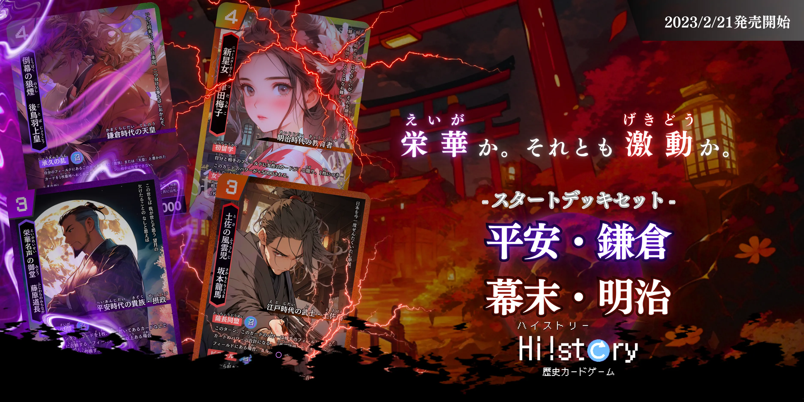

「歴史を楽しく主体的に」を合言葉に、子どもから大人まで歴史を楽しく遊びながら学ぶことのできるトレーディングカードゲームを制作・販売しています！

イラストには、画像生成AIの niji・journey を活用しています。
画像生成AI登場初期から使い続けており、プロンプトなどにもこだわって制作しています。
Webサイトはじっくりと考え、フロントエンド・バックエンドともにこだわりました。
全体の統一感から一つ一つのページの細部まで、思いを込めて作っています。
バックエンドは Node.js の express で開発しており、カードの検索機能やおしらせの編集・公開設定などをできるシステムがあります。
以下のようなところは特にこだわっています！
東大の生協にもおいてあるので、ぜひ一度手に取っていただけると幸いです！！
トップへ戻る